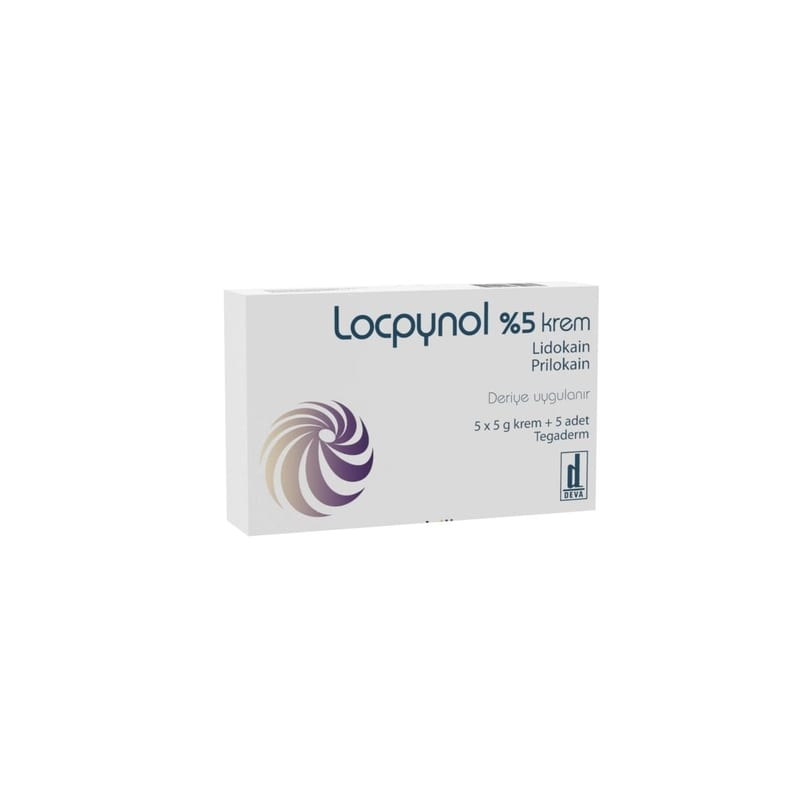

Locpynol % 5 Krem, 1 Adet

Ne için kullanılır
KT · Bölüm 1LOCPYNOL Krem deri üzerine uygulanan bir lokal anesteziktir (uyuşturucu). Uygulandığı bölgede geçici hissizlik ile duyu kaybını sağlar. Yine de uygulanan bölgeye dokunduğunuzda his mevcuttur. LOCPYNOL Krem deri üzerine, genital (üreme organı) mukozaya ve bacak ülserlerine uygulanır.
LOCPYNOL Krem 5 adet 5 g’lık tüplerde veya 1 adet 30 g’lık tüpte bulunmaktadır. 5 gr’lık tüpler bir karton kutuda 5 adet beyaz kapaklı tüp ve yanında 5 adet pansuman bandı ile birlikte sunulmaktadır. 30g’lık tüp bir karton kutuda 1 adet beyaz kapaklı tüp, 6 adet pansuman bandı ve 1 tahta spatula ile birlikte sunulmaktadır.
LOCPYNOL Krem, iğne uygulaması ve küçük deri cerrahisinde, girişimden önce deri üzerinde ağrının azaltılmasında kullanılır.
LOCPYNOL Krem ayrıca, cerrahi girişimlerden veya diğer lokal anesteziklerin enjeksiyonla uygulanmasından önce genital mukoza üzerine uygulanabilir.
LOCPYNOL Krem ayrıca temizlemeyi kolaylaştırmak için bacak ülserlerinde ağrının giderilmesinde kullanılır.